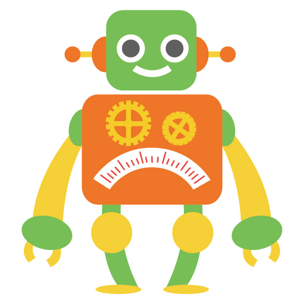
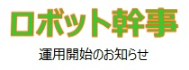
One JAPAN会員向けの新サービス「ロボット幹事」が 運用開始となります！
新しい出会いのために是非ご活用ください。
１．ロボット幹事って何？
One JAPANが新たに運用開始する会員同士のマッチングサービスです。
会員の皆さんの「興味・関心」と「よく利用する駅」を元に
マッチングを行い、幹事（ロボット幹事）として飲み会を企画します！
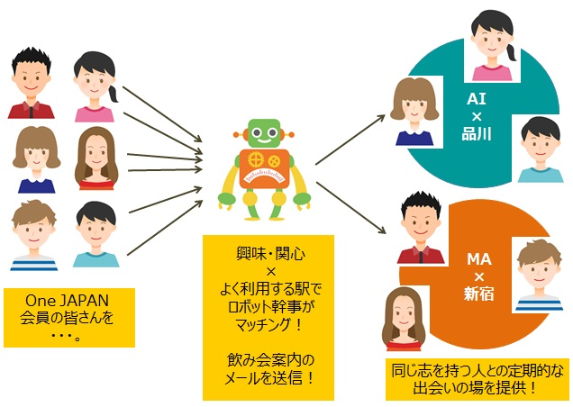
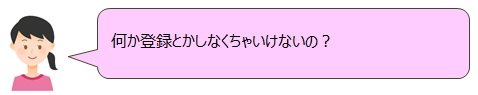
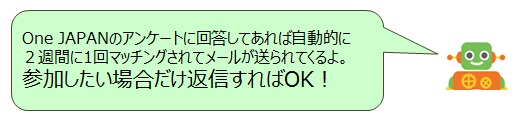

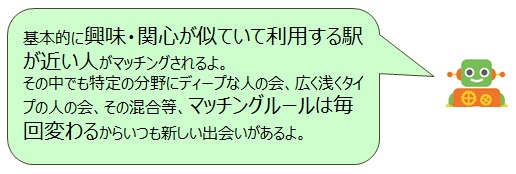
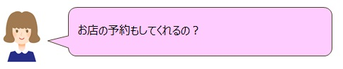
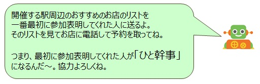
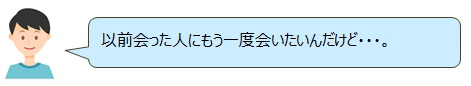
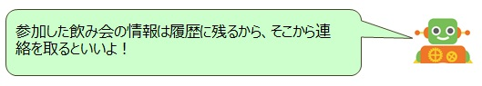
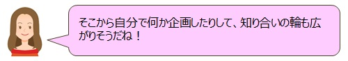
２．ロボット幹事の一連の流れ
「ロボット幹事」は２週間に１回マッチングを行い、
会員の皆さんに「開催案内」メールを送信します。
最初に参加表明してくれた方はお手数ですが「ひと幹事」として
ロボット幹事お勧めのお店を予約してください。
飲み会終了後はフィードバックアンケートに答えていただければ
ロボット幹事が次回はさらに素敵な飲み会を企画します。
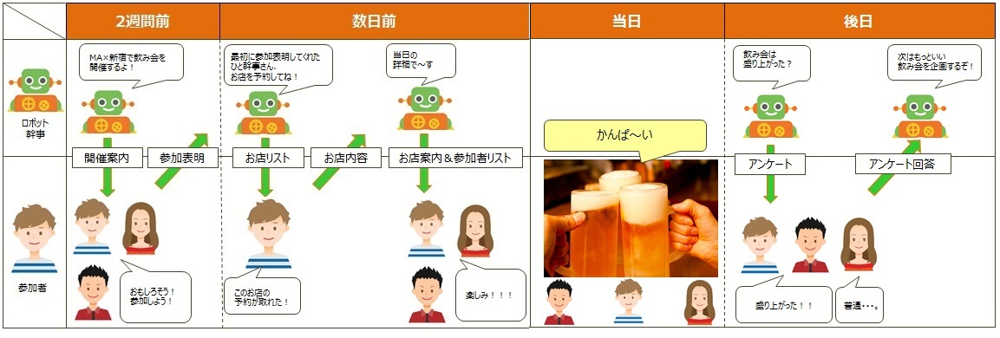
３．ロボット幹事からのお知らせとお願い
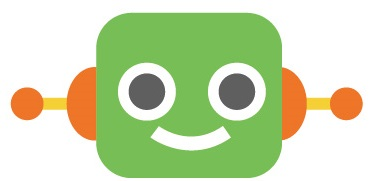
■本サービスは完全に自動化されているため、当日欠席等の連絡は「ひと幹事」にしていただきます。
よって、不特定多数に連絡先を知られたくない場合は幹事NGフラグをあらかじめ設定してください。
■本サービスはOne JAPAN会員でアンケートに回答していただいた全員を対象にしていますが、
参加を望まない場合は事務局へご連絡ください。
■アンケート未回答のOne JAPAN会員様で本サービスへの参加を希望される方は事務局へご連絡ください。
■その他詳細は「ロボット幹事サービス規約」をご覧ください。